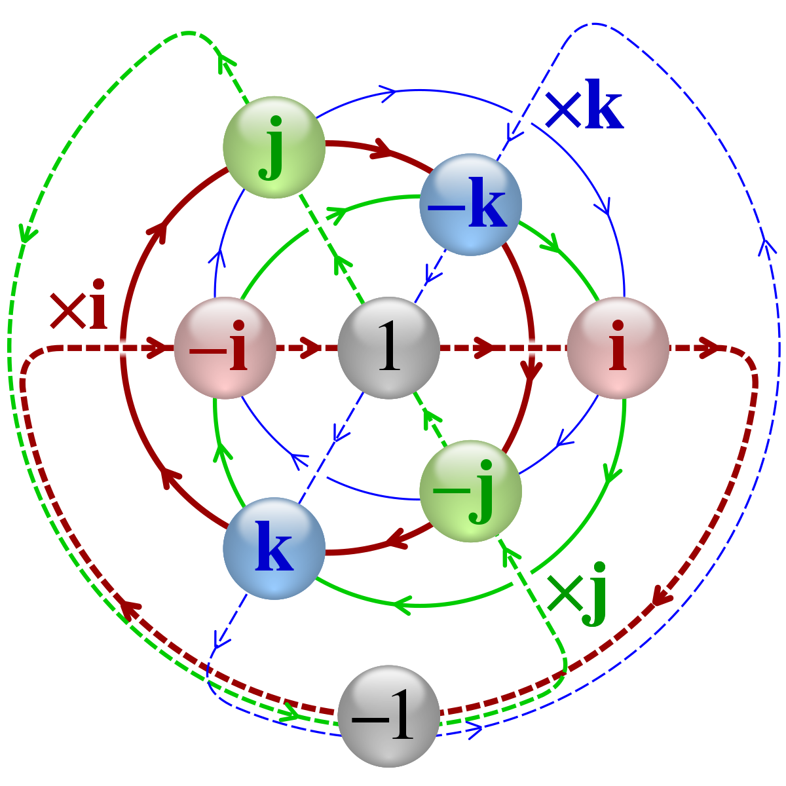

Kwaternion to struktura algebraiczna wprowadzona przez irlandzkiego matematyka Williama Hamiltona w roku 1843, będąca czterowymiarowym rozszerzeniem ciała liczb zespolonych. W dzisiejszych czasach kwaterniony są używane chociażby w grafice komputerowej do wykonywania obrotów w przestrzeni trójwymiarowej.
Istnieje kilka sposobów przedstawienia kwaternionu - można użyć chociażby postaci macierzowej, czyli macierzy z przestrzeni
postaci
\begin{bmatrix}
z & w \\
-\overline{\rm w} & z
\end{bmatrix}
gdzie
\begin{equation*}
z,w \in \mathbb{C}
\end{equation*}
lub postaci algebraicznej, zgodnie z którą kwaternion to obiekt postaci:
\begin{equation*}
q \; = \; ae \; + \; bi \; + \; cj \; + \; dk,
\end{equation*}
gdzie
\begin{equation*}
a, b, c, d \; \in \; \mathbb{R},
\end{equation*}
zaś
to pewne obiekty (jednostki urojone), dla których zachodzi:
\begin{equation*}
i^2 \, = \,j^2 \, = \,k^2 \, = \, \, -1.
\end{equation*}
Sprzężenie kwaternionu definiujemy jako:
\begin{equation*}
\overline{\rm q} \; = \; ae \; - \; bi \; - \; cj \; - \; dk
\end{equation*}
gdzie:
\begin{equation*}
a, b, c, d \; \in \; \mathbb{R}
\end{equation*}
Wyznacznik kwaternionu
W następnej kolejności przyjrzymy się wyznacznikowi kwaternionu przy okazji metody
Wyznacznik kwaternionu to:
\begin{equation*}
a^2+b^2+c^2+d^2
\end{equation*}
gdzie:
\begin{equation*}
a, b, c, d \; \in \; \mathbb{R}
\end{equation*}
Moduł kwaternionu
Moduł kwaternionu to pierwiastek kwadratowy z wyznacznika:
oznaczenie =
\begin{equation*}
\sqrt{a^2+b^2+c^2+d^2}
\end{equation*}
gdzie:
\begin{equation*}
a, b, c, d \; \in \; \mathbb{R}
\end{equation*}
Odwrotność kwaternionu
Iloczyn kwaternionu i jego odwrotności powinien być równy 1, zatem:
Jest to iloraz sprzężenia kwaternionu i jego modułu.
\begin{equation*}
q^{-1} = \frac{\overline{\rm q} }{\|q\|} = \frac{\; ae \; - \; bi \; - \; cj \; - \; dk}{\sqrt{a^2+b^2+c^2+d^2}}
\end{equation*}